热门出境游
巴黎
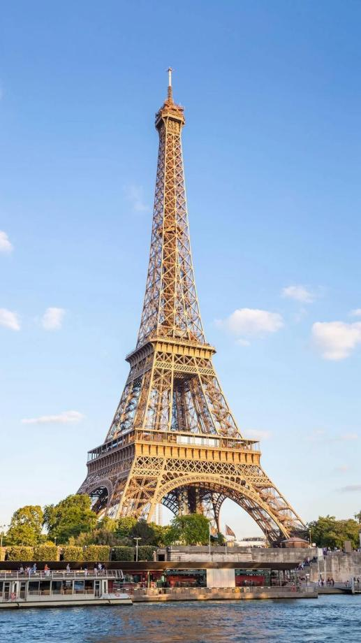
浪漫之都，拥有埃菲尔铁塔和卢浮宫，是法国的首都，也是世界上最受欢迎的旅游目的地之一。这座城市的魅力在于其浪漫的气息、丰富的历史遗产、世界级的艺术收藏以及令人垂涎的美食文化。
更多信息
巴黎，被誉为“光之城”（La Ville Lumière），是法国的首都，也是世界上最受欢迎的旅游目的地之一。这座城市的魅力在于其浪漫的气息、丰富的历史遗产、世界级的艺术收藏以及令人垂涎的美食文化。埃菲尔铁塔（Eiffel Tower）无疑是巴黎最著名的地标，每年吸引数百万游客前来参观。登上塔顶，可以俯瞰整个城市的壮观景色。而塞纳河（Seine River）两岸则是欣赏巴黎美景的最佳地点之一，河岸边分布着许多历史悠久的建筑和桥梁。卢浮宫（Louvre Museum）是世界上最大、最知名的博物馆之一，收藏了包括《蒙娜丽莎》在内的无数珍稀艺术品。此外，奥赛博物馆（Musée d'Orsay）以其印象派作品而闻名，蓬皮杜中心（Centre Pompidou）则专注于现代艺术。巴黎还以其独特的建筑风格著称，如哥特式建筑的典范——巴黎圣母院（Notre-Dame Cathedral），虽然2019年遭遇火灾受损，但它依然是巴黎不可或缺的一部分。另外，凯旋门（Arc de Triomphe）和香榭丽舍大道（Champs-Élysées）也是必游之地。
东京
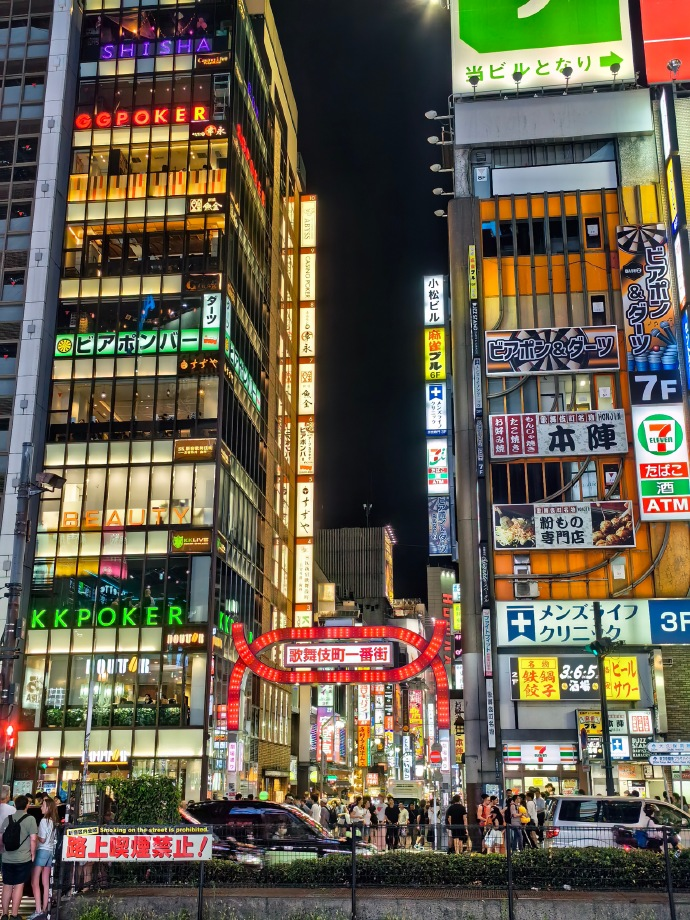
东京，作为日本首都和全球最大的城市之一，这座城市完美地融合了传统与现代元素，既有历史悠久的寺庙和庭院，也有超现代的高楼大厦和科技产品，是一个充满活力和文化的旅游目的地。游客可以在这里体验到东京晴空塔的壮观、浅草寺的古老魅力、银座的繁华购物，以及日本迪斯尼乐园的欢乐。东京不仅拥有现代化的高楼大厦，还保留了丰富的历史和传统文化，是一个适合各种旅游偏好的游客的理想之地。夜晚，夜生活十分活跃，这里有各式各样的酒吧、俱乐部以及艺术画廊等待着你的探索。
更多信息
东京，作为日本的首都，不仅是亚洲最大的都市之一，更是全球最重要的经济、文化和科技中心之一。这座城市完美地融合了传统与现代元素，既有历史悠久的寺庙和庭院，也有超现代的高楼大厦和科技产品。东京塔和晴空塔作为城市的新旧象征，分别提供了不同的观赏体验，前者以其红色外观和夜间灯光秀闻名，后者则以其高度优势成为新的观景点。浅草寺是东京最古老的佛教寺院之一，雷门下的参道两旁布满了售卖传统工艺品和小吃的商店。新宿御苑则是一处四季皆美的皇家园林，春季赏樱、秋季观枫，是市民和游客休闲的好去处。此外，银座作为高档购物区，汇聚了世界顶级品牌的旗舰店，是时尚潮流的风向标；而涩谷则是年轻人文化的中心，著名的涩谷十字路口每天吸引着成千上万的行人穿梭其间。东京的美食文化同样令人难以忘怀，从街头小吃如章鱼烧、天妇罗到高级寿司和怀石料理，每一口都能感受到日本料理的精髓。动漫迷们则可以在秋叶原找到各种与动漫相关的商品和体验。夜晚，六本木的夜生活十分活跃，这里有各式各样的酒吧、俱乐部以及艺术画廊等待着你的探索。
巴厘岛
热带天堂，以美丽的海滩和丰富的文化闻名。这里的海滩风光迷人，清澈的海水、金色的沙滩以及葱郁的热带植被构成了一幅幅令人陶醉的画面。在美食方面，巴厘岛的印尼菜以其独特的香料和烹饪方法而闻名。从街头小吃摊到五星级酒店的餐厅，都可以品尝到地道的印尼风味，如沙爹（Satay）、巴东牛肉（Rendang）等。
更多信息
巴厘岛位于印度尼西亚，被誉为“众神之岛”，是一个充满神秘色彩与自然美景的热带天堂。这里的海滩风光迷人，清澈的海水、金色的沙滩以及葱郁的热带植被构成了一幅幅令人陶醉的画面。库塔海滩（Kuta Beach）和金巴兰海滩（Jimbaran Beach）是岛上最受欢迎的海滩之一，不仅适合冲浪，还提供美味的海鲜烧烤。除了美丽的海岸线，巴厘岛还拥有丰富的文化遗产。乌布（Ubud）被称为艺术之都，这里不仅有精美的手工艺品市场，还有许多展示传统巴厘舞蹈和音乐的表演。塔纳洛特寺（Tanah Lot Temple）建在海边的岩石上，是岛上最著名的寺庙之一，每当夕阳西下时，寺庙的轮廓与落日交相辉映，美不胜收。巴厘岛的自然景观同样令人惊叹。图南甘加瀑布（Tegenungan Waterfall）和吉鲁瓦尼村（Tegalalang Rice Terrace）的梯田都是自然爱好者的必游之地。此外，巴厘岛还有许多世界级的潜水点，如蓝梦岛（Nusa Lembongan）和图兰奔（Tulamben），海底世界的奇妙生物和珊瑚礁让人流连忘返。在美食方面，巴厘岛的印尼菜以其独特的香料和烹饪方法而闻名。从街头小吃摊到五星级酒店的餐厅，都可以品尝到地道的印尼风味，如沙爹（Satay）、巴东牛肉（Rendang）等。
纽约
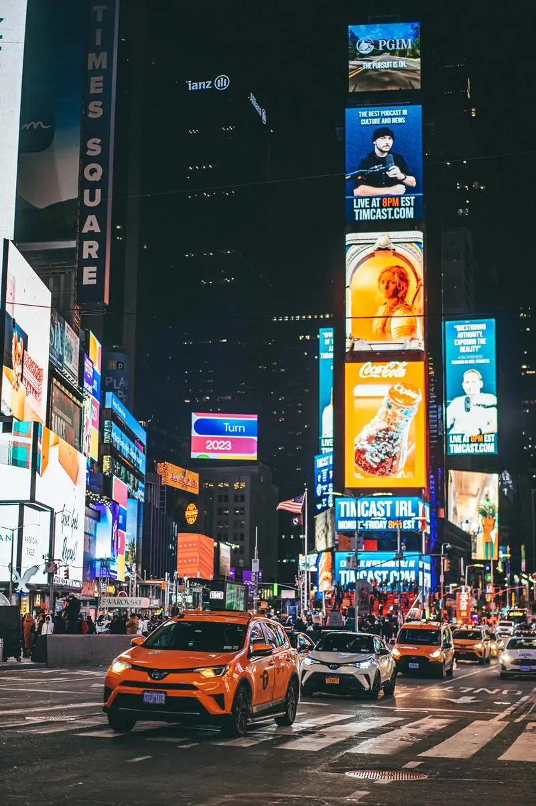
全球金融中心，拥有自由女神像和中央公园，不仅是美国最大的城市之一，也是全球的金融、文化、艺术和媒体中心。曼哈顿岛上的时代广场是全球最繁忙的行人过境点之一，每年除夕夜的水晶球降下仪式吸引了全世界的目光。
更多信息
纽约，这座“不夜城”不仅是美国最大的城市之一，也是全球的金融、文化、艺术和媒体中心。曼哈顿岛上的时代广场是全球最繁忙的行人过境点之一，每年除夕夜的水晶球降下仪式吸引了全世界的目光。自由女神像是纽约最著名的地标之一，代表着自由和民主的精神。位于曼哈顿下城的华尔街是全球金融的心脏地带，众多跨国公司的总部设于此地。中央公园是纽约市内的一片绿洲，占地843英亩，为繁忙都市中的居民和游客提供了一个放松身心的好去处。公园内设有湖泊、喷泉、动物园以及多条步行和自行车道。百老汇则是戏剧和音乐剧爱好者的圣地，这里上演着世界上最著名的舞台剧目。此外，大都会艺术博物馆（The Metropolitan Museum of Art）是世界上最大的艺术博物馆之一，收藏了从古代文明到现代艺术的大量作品。纽约的美食同样多样，从街头的热狗摊到米其林星级餐厅，应有尽有。布鲁克林区的威廉斯堡是年轻艺术家和创意人士的聚集地，这里充满了艺术气息和创新精神。纽约还是时尚界的中心之一，每年两次的纽约时装周吸引了全球顶尖设计师和品牌。
罗马
历史悠久的城市，以古罗马遗址和美食闻名。罗马的历史可以追溯到公元前8世纪，至今仍保留着大量的古迹和艺术珍品。斗兽场曾经是举办角斗士比赛的场所。
更多信息
罗马是意大利的首都，也是古罗马文明的摇篮。罗马的历史可以追溯到公元前8世纪，至今仍保留着大量的古迹和艺术珍品。斗兽场（Colosseum）是罗马最著名的建筑之一，曾经是举办角斗士比赛的场所。梵蒂冈城国（Vatican City）是世界上最小的独立国家，也是天主教的中心，圣彼得大教堂（St. Peter's Basilica）和梵蒂冈博物馆（Vatican Museums）都是必游之地。罗马还有许多其他重要的历史遗迹，如许愿池（Trevi Fountain）、万神殿（Pantheon）和纳沃纳广场（Piazza Navona）。这些古迹不仅展现了罗马辉煌的历史，也成为了电影和文学作品中的经典场景。罗马的美食同样值得品尝，如经典的意大利面、比萨饼以及各式甜点，都是味蕾的享受。
泰国
一座充满活力的城市，充满异国风情和文化，有美丽的海滩、古老的历史遗迹。
更多信息
泰国，位于东南亚的心脏地带，以其美丽的海滩、丰富的文化历史遗迹和友好的人民而闻名于世。首都曼谷是一座充满活力的城市，大皇宫（Grand Palace）和卧佛寺（Wat Pho）等古迹展示了泰国辉煌的历史。湄南河（Chao Phraya River）贯穿整个城市，乘船游览可以看到沿岸的传统生活场景。清迈是泰国北部的一个重要城市，以其众多的佛教寺庙和周边的自然景观而著称。素贴山（Doi Suthep）上的寺庙是清迈的象征之一，每年吸引着大量的朝圣者和游客。普吉岛（Phuket）和苏梅岛（Samui）则是著名的海滨度假胜地，拥有清澈的海水和柔软的沙滩，是潜水和日光浴的理想之地。泰国的美食文化享誉全球，从街头的小吃摊到高档餐厅，都能品尝到地道的泰式风味。如绿咖喱、冬阴功汤、泰式炒河粉等都是不可错过的美味佳肴。泰国还是购物天堂，曼谷的恰图恰周末市场（Chatuchak Weekend Market）是亚洲最大的露天市场之一，可以淘到各种手工艺品和纪念品。
新加坡
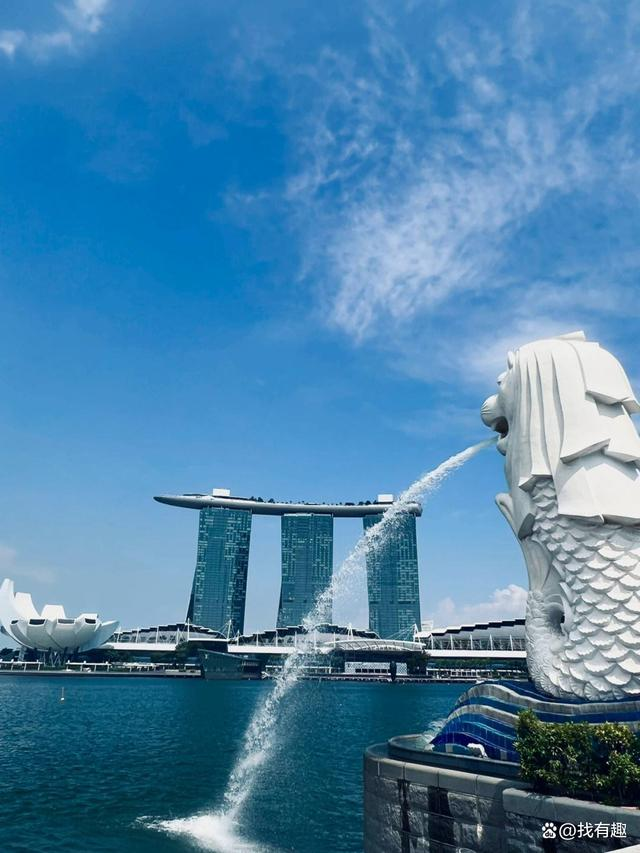
充满活力和文化多元化，有丰富的美食、自然景观和国际金融贸易。
更多信息
新加坡，虽然国土面积不大，但却是一个充满活力的国际大都市。作为亚洲的交通枢纽之一，新加坡拥有先进的基础设施和发达的服务业。滨海湾花园（Gardens by the Bay）以其超树结构（Supertrees）和两个大型温室而闻名，展示了未来城市绿化的新理念。滨海艺术中心（Esplanade – Theatres on the Bay）则是新加坡文化艺术的核心区域，经常举办各种音乐会和戏剧演出。新加坡的多元文化体现在其美食上，马来菜、中华菜、印度菜和西方菜系在此交汇融合，形成了独特的“娘惹”风味。牛车水（Chinatown）、小印度（Little India）和阿拉伯街（Arab Street）等地区展现了不同民族的文化特色。夜间野生动物园（Night Safari）是世界上第一个专为夜间游览设计的野生动物园，游客可以近距离观察夜间活动的动物。
韩国
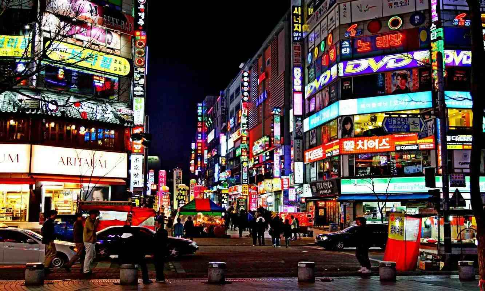
流行文化风靡全球，从音乐、电影到时尚，其影响力和创新精神备受赞誉。韩国，正式名称为大韩民国，位于朝鲜半岛南部，是一个充满活力的现代化国家，以其先进的技术和深厚的文化底蕴而闻名。首尔作为韩国的首都，既是政治、经济和文化的中心，也是一个充满活力的国际大都市。韩国还有许多传统的节日和庆典，如春节（Seollal）和中秋节（Chuseok），期间会举行各种庆祝活动。自然景观方面，济州岛（Jeju Island）以其火山地貌和美丽的海滩而闻名，是韩国最热门的旅游目的地之一。此外，太白山脉（Taebaek Mountains）和济州岛的汉拿山（Hallasan）也提供了徒步和登山的好去处。
更多信息
韩国，正式名称为大韩民国，位于朝鲜半岛南部，是一个充满活力的现代化国家，以其先进的技术和深厚的文化底蕴而闻名。首尔作为韩国的首都，既是政治、经济和文化的中心，也是一个充满活力的国际大都市。首尔塔（N Seoul Tower）坐落在南山之上，是俯瞰城市全景的最佳地点之一。韩国的历史可以追溯到公元前2333年的檀君传说，悠久的历史留下了众多珍贵的文化遗产。景福宫（Gyeongbokgung Palace）是朝鲜王朝的皇家宫殿，历经多次重建，现在已成为首尔的标志性建筑之一。昌德宫（Changdeokgung Palace）则以其精美的花园和保存完好的宫殿建筑而著名，已被列入联合国教科文组织的世界遗产名录。除了丰富的历史遗迹外，韩国还以其流行文化在全球范围内产生了巨大影响。K-pop音乐、韩剧和电影吸引了无数粉丝。首尔的明洞（Myeongdong）和弘大（Hongdae）地区是购物和体验韩国流行文化的绝佳去处，这里有许多时尚的商店、餐厅和娱乐场所。韩国的美食文化同样丰富多样，从泡菜（Kimchi）到烤肉（BBQ），再到拌饭（Bibimbap），每一道菜都展示了韩国料理的独特风味。此外，韩国还有许多传统的节日和庆典，如春节（Seollal）和中秋节（Chuseok），期间会举行各种庆祝活动。自然景观方面，济州岛（Jeju Island）以其火山地貌和美丽的海滩而闻名，是韩国最热门的旅游目的地之一。此外，太白山脉（Taebaek Mountains）和济州岛的汉拿山（Hallasan）也提供了徒步和登山的好去处。
新西兰
充满原始气息，每一个角落都弥漫着大自然的芬芳，完美融合了自然美景与人文风情。
更多信息
新西兰位于太平洋西南部，由北岛和南岛组成，是一个自然风光壮丽、文化多元化的国家。这里不仅有壮观的自然景观，还有丰富的户外活动，是探险者的天堂。奥克兰（Auckland）是新西兰最大的城市，位于北岛，以其港口、天际塔（Sky Tower）和多样的文化活动而著称。皇后镇（Queenstown）位于南岛，被誉为“冒险之都”，提供跳伞、喷射快艇和滑雪等多种极限运动。米尔福德峡湾（Milford Sound）是新西兰最著名的自然景观之一，以其壮观的瀑布、陡峭的悬崖和清澈的水域而闻名，被列入世界自然遗产。新西兰的历史和文化深受毛利人（Māori）的影响，毛利人是新西兰最早的居民之一，他们独特的文化传统至今仍然在新西兰的社会生活中占据重要地位。罗托鲁瓦（Rotorua）是体验毛利文化的理想之地，这里有传统的毛利村落、温泉和地热景观。新西兰也是电影拍摄的理想地点，《指环王》三部曲和《霍比特人》系列就是在新西兰取景拍摄的，这些电影的成功进一步提升了新西兰作为旅游目的地的知名度。惠灵顿（Wellington）不仅是新西兰的首都，也是电影制作的中心，著名的维塔工作室（Weta Workshop）就位于这里。新西兰的农业和畜牧业非常发达，奶制品、羊肉和水果等农产品质量上乘。新西兰的葡萄酒产区，如马尔堡（Marlborough）和霍克斯湾（Hawke's Bay），生产的葡萄酒享有国际声誉。无论是想要亲近自然、体验极限运动，还是探索丰富的文化遗产，新西兰都能满足游客的各种需求，是一个理想的旅游目的地。
迪拜
阿拉伯联合酋长国七个酋长国之一，以其奢华的生活方式和雄伟的建筑而闻名。沙漠中的冒险活动，如沙漠冲沙、骑骆驼和沙漠野餐等，也是迪拜的一大特色。
更多信息
迪拜是阿拉伯联合酋长国七个酋长国之一，以其奢华的生活方式和雄伟的建筑而闻名。哈利法塔（Burj Khalifa）是世界上最高的建筑，高达828米，游客可以从观景台上俯瞰整个城市的壮观景象。帆船酒店（Burj Al Arab）是全球唯一一家七星级酒店，以其独特的帆船形状设计而著称。迪拜购物中心（Dubai Mall）是世界上最大的购物中心之一，内有数百家店铺、电影院、水族馆等设施。棕榈岛（Palm Jumeirah）是一个人工岛屿，形似棕榈树，上面建有豪华住宅区和度假酒店。沙漠中的冒险活动，如沙漠冲沙、骑骆驼和沙漠野餐等，也是迪拜的一大特色。此外，迪拜的美食融合了中东、印度和西方的风味，如烤肉串、鹰嘴豆泥和阿拉伯烤饼都是值得一试的当地美食。迪拜的夜生活也非常热闹，有许多酒吧、夜总会和海滩俱乐部供游客享受。
开罗
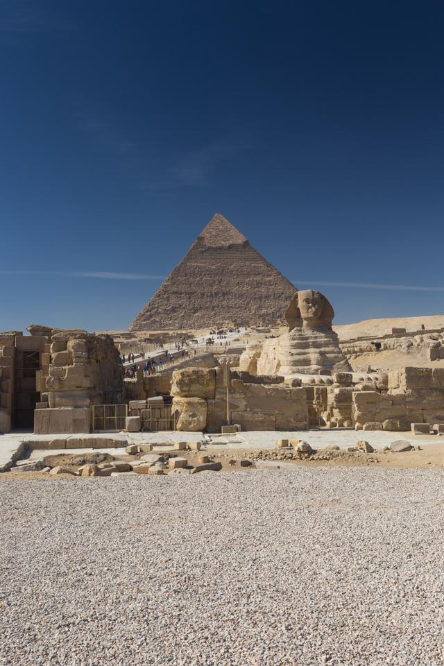
这座城市是探索古埃及文明的起点，吉萨金字塔群（Pyramids of Giza）和狮身人面像（Sphinx）是开罗最著名的地标，也是世界上最古老且保存完好的建筑之一。开罗的夜生活同样丰富多彩，有许多提供传统肚皮舞表演的餐厅和咖啡馆。此外，开罗还是一个购物天堂，市场中出售着各种手工艺品、纺织品和纪念品。
更多信息
开罗是埃及的首都，同时也是非洲最大的城市之一。这座城市是探索古埃及文明的起点，吉萨金字塔群（Pyramids of Giza）和狮身人面像（Sphinx）是开罗最著名的地标，也是世界上最古老且保存完好的建筑之一。埃及博物馆（Egyptian Museum）收藏了大量珍贵的文物，包括图坦卡蒙国王的黄金面具。尼罗河（Nile River）穿城而过，乘船游览可以欣赏到沿岸的风光。开罗塔（Cairo Tower）位于扎玛利亚克岛上，是俯瞰全城的最佳位置之一。老城区（Islamic Cairo）保留了许多中世纪的建筑，如艾兹哈尔清真寺（Al-Azhar Mosque）和汗·哈利利市场（Khan El Khalili Bazaar）。开罗的夜生活同样丰富多彩，有许多提供传统肚皮舞表演的餐厅和咖啡馆。此外，开罗还是一个购物天堂，市场中出售着各种手工艺品、纺织品和纪念品。
马德里
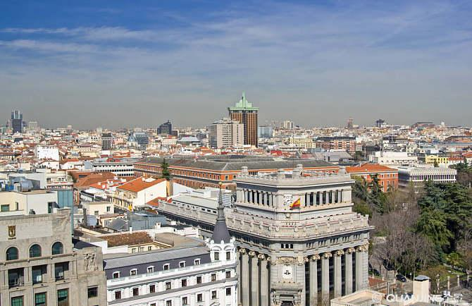
马德里是西班牙的首都，以其丰富的艺术收藏、悠久的历史和热情的文化氛围而闻名。马德里的美食以传统的西班牙风味为主，如海鲜饭（Paella）、火腿（Jamón）和土豆煎蛋（Tortilla Española）都是当地的特色菜肴。马德里的夜生活同样充满活力，有许多酒吧和俱乐部供游客体验西班牙的热情与狂欢。
更多信息
马德里是西班牙的首都，以其丰富的艺术收藏、悠久的历史和热情的文化氛围而闻名。普拉多博物馆（Prado Museum）是世界上最重要的美术馆之一，收藏了从文艺复兴时期到19世纪的欧洲绘画大师的作品。索菲亚王后艺术中心（Reina Sofia Museum）则专注于20世纪的现代艺术，尤其是毕加索的《格尔尼卡》。马德里皇宫（Royal Palace of Madrid）是欧洲第二大宫殿，内部装饰豪华，展示了西班牙皇室的历史。太阳门广场（Puerta del Sol）是马德里的心脏地带，周围有许多商店、咖啡馆和酒吧。此外，马德里的足球文化也非常浓厚，伯纳乌球场（Santiago Bernabéu Stadium）是皇家马德里队的主场，吸引了无数球迷前来参观。马德里的美食以传统的西班牙风味为主，如海鲜饭（Paella）、火腿（Jamón）和土豆煎蛋（Tortilla Española）都是当地的特色菜肴。马德里的夜生活同样充满活力，有许多酒吧和俱乐部供游客体验西班牙的热情与狂欢。
火爆国内游
北京
千年古都，承载着中华文化的厚重与独特魅力。
更多信息
北京，古都新貌，红墙金瓦映朝霞，胡同深处藏故事。高楼大厦林立间，传统与现代交织成画。天安门广场庄严巍峨，故宫博物院古韵悠长，彰显千年皇城气派。京味小吃香飘四溢，繁华市井烟火气浓，一座既古老又年轻，充满无限魅力的国际大都市。
西安
大西北的繁华都市，充满独特的人文气息和美食风味。
更多信息
西安，千年古都，古城墙巍峨屹立，诉说着历史的沧桑。兵马俑沉睡千年，气势恢宏，见证大秦帝国的辉煌。回民街热闹非凡，美食飘香，让人回味无穷。钟鼓楼晨钟暮鼓，诉说着岁月的故事，西安，一座活的历史博物馆，古今交融，魅力无限。
成都
一座拥有众多著名高校和科技企业的现代化都市，充满创新和活力。
更多信息
成都，天府之国，熊猫故乡，慢生活的代名词。宽窄巷子古韵今风，茶香四溢，悠闲自得。锦里古街灯火阑珊，美食琳琅，辣而不燥，麻而鲜香。都江堰水利奇迹，滋养万物，展现古人智慧。成都，一座来了就不想离开的城市，温馨而美好。
上海
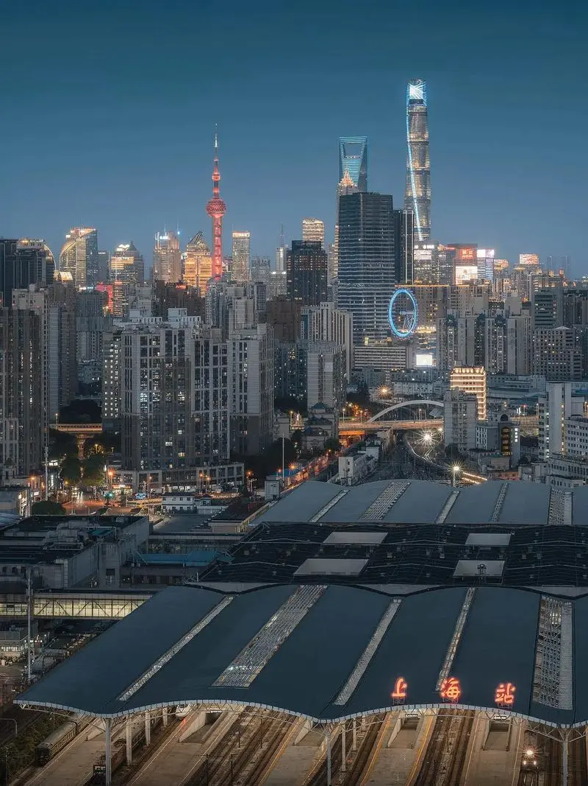
国际化大都市，古典与现代交相辉映，东方与西方文化融为一体。
更多信息
上海，东方明珠，繁华都市，摩天大楼耸入云端，黄浦江畔灯火辉煌。外滩万国建筑群，见证着历史的变迁与时代的荣耀。弄堂里弄，老上海风情依旧，石库门里藏着岁月的故事。上海，一座充满机遇与挑战，传统与现代交融的国际大都市，魅力无限。
重庆
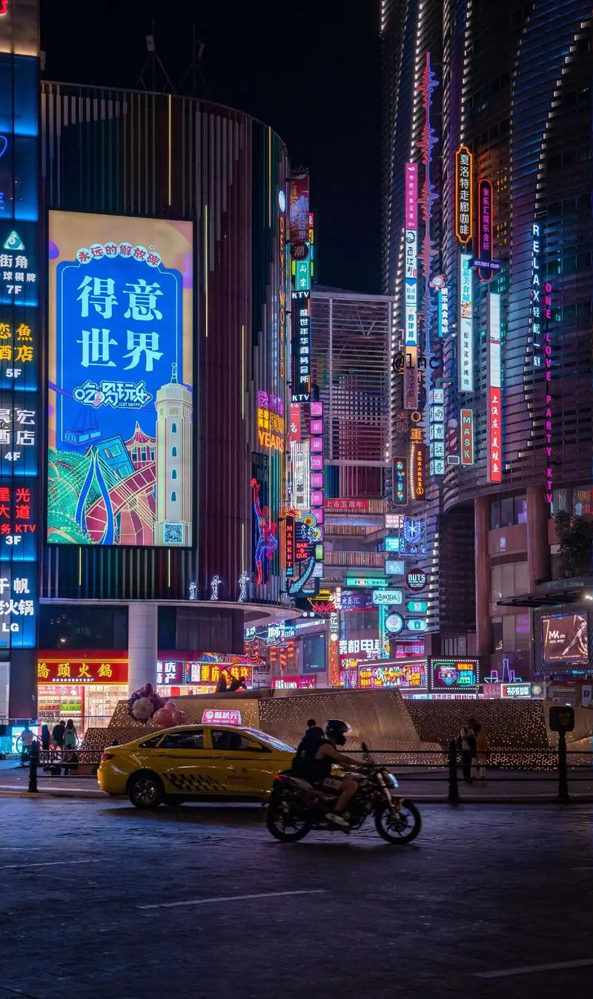
人杰地灵之城,美丽麻辣之都。
更多信息
重庆，山城雾都，两江环抱，桥都之称名不虚传。洪崖洞灯火阑珊，吊脚楼依山而建，恍若千与千寻的梦幻之境。火锅热辣，小面飘香，美食之都令人垂涎。轻轨穿楼过，索道跨江行，重庆，一座3D魔幻城市，让人流连忘返。
青岛
美丽的滨海城市,被誉为“东方瑞士”。
更多信息
青岛，海滨明珠，红瓦绿树，碧海蓝天。八大关风情万种，欧式建筑错落有致，漫步其间，仿佛置身欧洲小镇。栈桥伸入海中，海鸥翱翔，海风轻拂，带来丝丝凉意。青岛啤酒香飘四海，海鲜大餐令人垂涎。青岛，一座让人心旷神怡的海滨城市。
长沙
星城瑰丽，潇湘魅力，融汇古今，成就一座梦想之城。
更多信息
长沙，星城璀璨，岳麓书院书香浓，橘子洲头湘水长。坡子街美食云集，臭豆腐辣而不燥，糖油粑粑甜香四溢。IFS高楼耸立，现代都市气息浓厚。长沙，一座历史文化与现代文明交相辉映，美食与美景并存的城市，活力四溢。
大连
一座从山海中走来的城，一座年轻、开放、充满无限可能的城。
更多信息
大连，浪漫之都，滨海之城，风光旖旎。星海广场宽广无垠，华表矗立，彰显城市魅力。棒棰岛碧波荡漾，海天一色，海鸥翱翔。俄罗斯风情街异国情调浓厚，老建筑诉说着历史的故事。大连，一座融合了自然美景与人文底蕴的滨海名城。
哈尔滨
一座展现东方浪漫与西方典雅的城市。
更多信息
哈尔滨，冰城夏都，冬日银装素裹，冰雪大世界晶莹剔透，冰雕雪塑巧夺天工。夏日凉爽宜人，松花江畔风光旖旎，太阳岛绿意盎然。红肠马迭尔，俄式风情街，尽显异域风采。哈尔滨，一座四季分明，魅力独特的北国都市。
天津
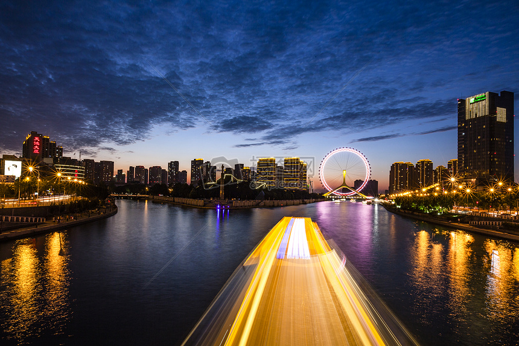
历史悠久、中西合璧、充满活力的现代化大都市。
更多信息
天津，九河下梢，津门故里，古今交融。五大道历史风貌区，欧式建筑错落有致，漫步其间，仿佛穿越时光隧道。海河夜景璀璨夺目，游船穿梭，灯光与波光交相辉映。狗不理包子名扬四海，耳朵眼炸糕香甜可口。天津，一座充满故事与美食的直辖市，魅力独特。
南京
六朝古都，历史与现代交织的锦绣之城，文化底蕴深厚，自然风光旖旎。
更多信息
南京，六朝古都，历史厚重，文化底蕴深厚。中山陵庄严肃穆，紫金山巍峨壮丽，见证着历史的沧桑与变迁。秦淮河畔，夫子庙前，灯火阑珊，古色古香，诉说着江南水乡的柔情与雅致。南京，一座充满历史韵味与现代活力的城市，令人心驰神往。
杭州
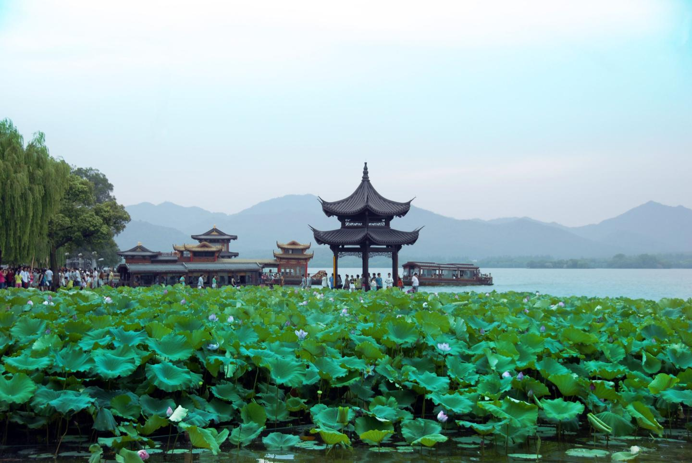
人间天堂，西湖美景如画，古今交融的诗意之城，尽显江南水乡之韵。
更多信息
杭州，人间天堂，西湖美景如画，烟雨朦胧中更显温婉。断桥残雪，雷峰夕照，每一处都是诗与远方的画卷。龙井茶香四溢，丝绸柔滑细腻，展现着江南的精致与韵味。杭州，一座让人沉醉于山水之间，流连忘返的江南名城。
© 2024 旅途记. 保留所有权利.